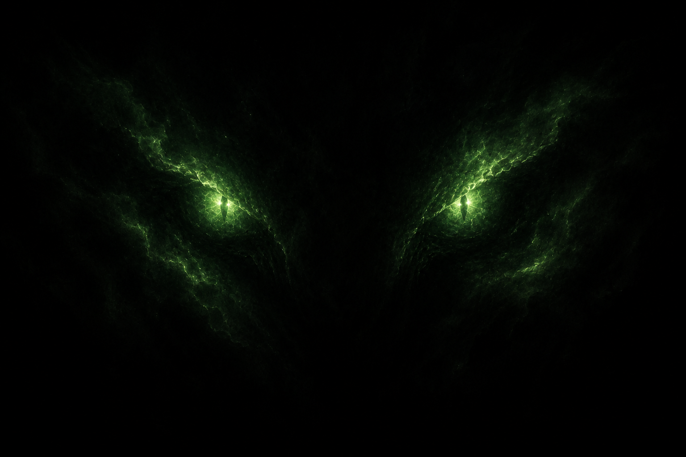
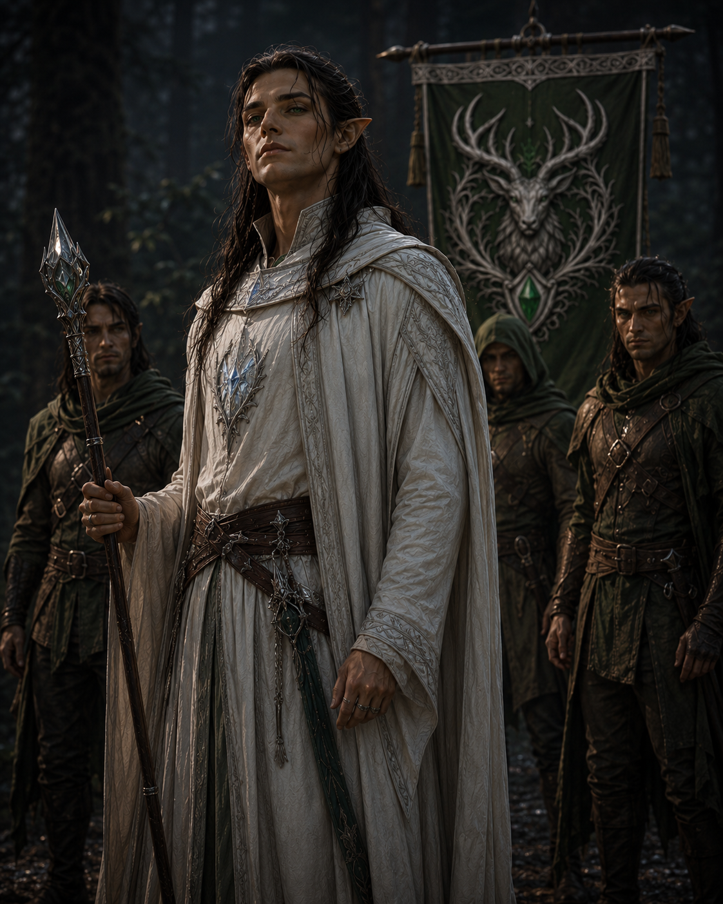
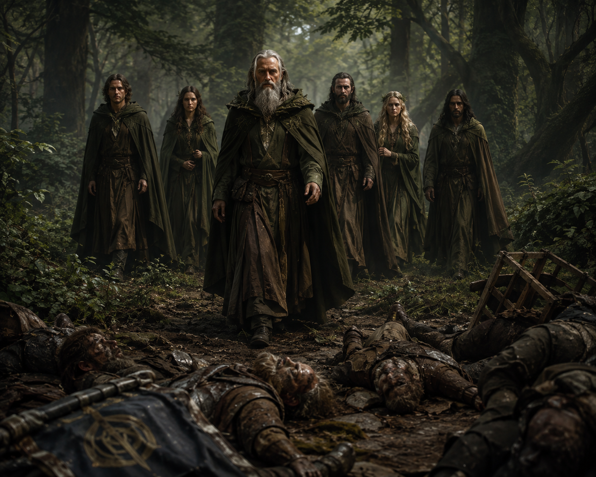
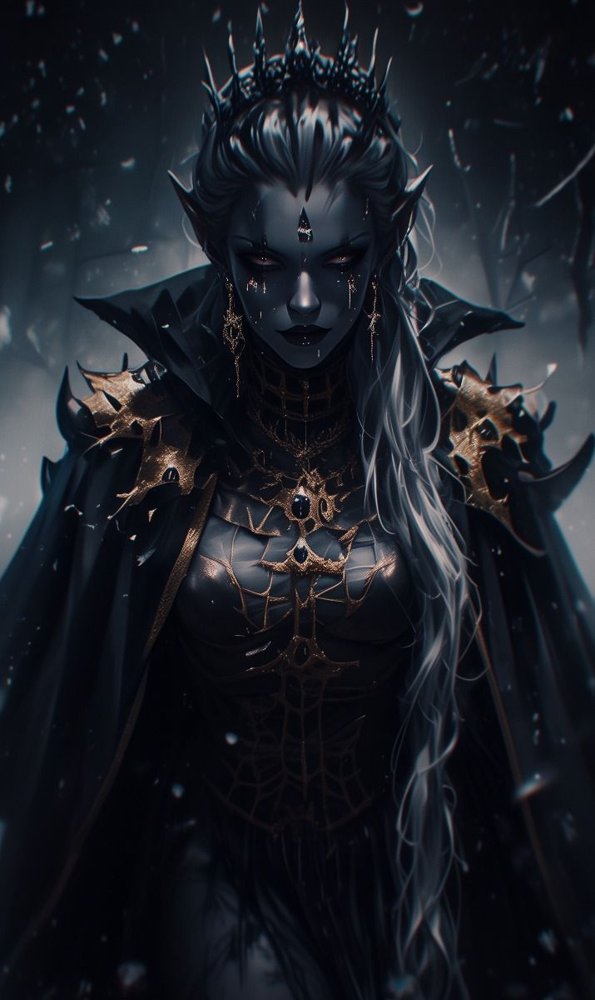

As the long chill of Frostdeep draws to an end, the kingdom of Faningor
prepares to welcome the season of Bloomtide with celebration.
By royal decree, King Arden Vane II has called for a grand
festival in the capital—a five-day gathering of feasting, music, games,
and ceremony, open to all citizens of Faningor and those who stand among
its allies.
Travelers, merchants, nobles, and wanderers alike are expected to arrive
from across the realm and beyond. Streets will be adorned, markets will
flourish, and the city will come alive in a rare moment of unity and joy.
Our heroes, each for their own personal reasons, find themselves drawn to
this festival. Whether by invitation, duty, curiosity, or chance, their
paths lead them to Faningor at the turning of the season.
Yet beneath the celebration, there lingers a quiet unease.
The past year has seen subtle shifts across the lands—movements harder to
explain, silences where there once was openness, and a growing sense that
something is changing beyond the notice of most.
Few speak of it openly. Fewer still understand it.
For now, however, the banners are raised, the gates are open, and the
festival awaits.
The story begins not with answers, but with confusion.
Our heroes awoke deep within a cave high inside a mountain,
battered, exhausted, and with no memory of how they had arrived there.
Their names, skills, and companions remained familiar, yet everything
that had happened since their first arrival in Faningor seem to have been wiped
clean from their minds. Around them lay six strange gemstones, now dull
and lifeless, and the remnants of equipment scorched by some immense force.
With the mountain trembling around them and the threat of collapse
ever-present, the party had little choice but to flee.
Emerging from the cave, they were met by a sight none of them recognized.
Vast forests stretched across the land below, and in the distance a village
burned. Drawn by equal parts necessity and curiosity, they descended the
mountain and made their way toward the settlement.
What they found was devastation.
The village had been almost completely destroyed. Homes lay in ruins,
fires still smouldered among the wreckage, and the remains of its inhabitants
told a grim tale of catastrophe. Searching for supplies and answers, the
party instead found themselves facing a new danger as a group of frenzied
hill giants descended upon the ruins.
Outnumbered and pressed on all sides, the heroes fought desperately for
survival. As the battle seemed on the verge of overwhelming them, a colossal
shadow swept across the land. A deafening roar echoed from above, shaking
the earth itself.
The giants froze.
Then, gripped by fear, they fled.
Whatever creature had passed overhead was evidently feared even by these
savage giants.
With the immediate danger gone, the party gathered themselves among the
ruins and took shelter for the night. Questions far outnumbered answers,
and sleep brought little comfort.
At dawn, they awoke to find a lone stranger watching them from the edge of
the settlement. Communication proved impossible; she spoke a language none
of the heroes understood. Yet her urgency was unmistakable. Through gestures
and determined insistence, she implored the party to follow her.
With no better lead and nowhere else to turn, the heroes chose to trust the
mysterious woman and set off into the wilderness.
The mysterious woman led the party ever deeper into the forests.
For three long days they travelled beneath the endless canopy, surviving on what they could hunt and forage while enduring damp nights beneath the trees. Though words failed them, small moments of understanding slowly emerged. Through divine magic, one of the heroes briefly bridged the language barrier, allowing fragments of the woman's story to be shared as the journey continued. Her name is Melnah.
Eventually, the forest opened onto a makeshift camp hidden among the ancient trees.
There the heroes met the last survivors of the ruined village and their newly appointed leader, Helfkor Brightmane, whose people now numbered only a handful. Before questions could be answered, another familiar face emerged from the camp.
Captain Rolor D'Amarth, master of the vessel that had carried the party across the sea, recounted the events following their departure from Alrais. He revealed the identity of a mysterious companion named Srilissa, a female drow who had travelled beside them during their expedition into the mountain.
Yet Srilissa herself was nowhere to be found.
Determined to lead his people to safety, Helfkor urged everyone onward toward Bramblebarrow, a hidden forest-gnome settlement known only to a select few. The journey proved anything but peaceful. Deep within the forest, the party was ambushed by two fearsome green wyrmlings. After a fierce battle, one of the creatures was slain while the other escaped into the wilderness.
Soon afterwards, the travellers reached Bramblebarrow, where they were welcomed by Keeper Elowen Dewpetal. She revealed that the secluded village had only allowed itself to be found because of her long-standing friendship with Helfkor and the people of Dravyl.
As stories were exchanged, the mysteries surrounding the heroes only deepened. Elowen spoke of subtle yet undeniable changes that had spread throughout the world since the great volcanic eruption. Rather than descending into chaos, nature itself appeared calmer—as though an unseen burden had finally been lifted.
According to ancient tales and recent whispers alike, the heroes had entered the mountain in pursuit of a purpose far greater than they remembered: to save the world from an approaching calamity. The six gemstones they had carried into the mountain, once said to pulse with strange life, had become nothing more than lifeless relics.
Most unsettling of all were Elowen's final words. The ancient trees of the forest, she claimed, whispered that the party carried within them the echo of an ancient magic—one that belonged to an age before the kingdoms of today, and to a land long since lost.
With far more questions than answers, the heroes accepted Elowen's hospitality and remained in Bramblebarrow to recover from their trials.
For now, their search for the truth would have to wait another day...
NPCs Encountered
Melnah
Survivor of Dravyl and scout.
Helfkor Brightmane
Newly appointed leader of the surviving Dravyl.
Captain Rolor D'Amarth
Veteran captain who finally revealed what happened after the voyage to Vernia.
Keeper Elowen Dewpetal
Keeper of Bramblebarrow and guardian of ancient knowledge.
Having earned the trust of the forest gnomes, the party remained within their hidden settlement for one final night before continuing their journey.
That evening, Captain Rolor sought them out. Troubled by Keeper Elowen's advice, he confessed his unease about travelling to the realm of the Wood-Elves. Instead, he proposed returning to the coast to reclaim his ship and sail back to Alrais. After much discussion, the party chose to continue towards the Jaded Realm, and though reluctant, Rolor agreed to accompany them.
Before dawn, a humble forest gnome named Tobbin Greenmantle approached the heroes with a gift. Believing them to be the world's last hope, he entrusted them with a necklace bearing a remarkable white gemstone, explaining that it had been given to him by a Wood-Elf many years before. As each member of the party held the gemstone, they felt it pulse with an ancient power unlike anything they had experienced before.
Guided by the dragonfly Sparx, the group journeyed through the forests of Vernia, eventually reaching the majestic Wood-Elven kingdom known as the Jaded Realm.
To their surprise, they were warmly welcomed. King Feodran Almyrr claimed to have foreseen their arrival through a divine vision and invited them to a grand banquet in their honour.
During the feast, the party finally found answers to many of the questions surrounding the mysterious gemstones they had discovered beneath the Lone Mountain. The King explained that each gemstone possessed a unique essence capable of granting extraordinary abilities when wielded through ancient magical tattoos. The newly discovered white gemstone, they learned, was particularly rare, granting telepathic abilities while protecting its bearer from the influence of several other gemstone powers.
Yet throughout his explanations, the King repeatedly spoke of the kingdoms of Alberon and Rhuedon with clear concern. According to him, the gemstones had never been intended as instruments of war, yet the High Elves of Alberon and their allies had long used their power to strengthen their armies and create elite warriors. He warned that what were once sacred gifts had become tools of ambition, hinting that the eastern kingdoms had strayed far from the gemstones' true purpose.
But before the party could ask more...
Without warning, both the party and Captain Rolor were overcome by an overwhelming dizziness before losing consciousness.
They awoke some time later dressed in simple prison garments within an unfamiliar room. Captain Rolor was nowhere to be found.
Instead, they were greeted by a Wood-Elf named Valdonyr, who hurriedly explained that they had been betrayed and were now in grave danger. Having secretly rescued them, he returned their equipment and urged them to escape immediately through a concealed trapdoor beneath the house. Outside, the sounds of shouting guards and frantic searches echoed through the streets.
When questioned about Rolor, Valdonyr delivered devastating news:
the Captain was gone.
Promising to delay their pursuers alongside his siblings, Valdonyr sent the party into the darkness below.
The ancient tunnels beneath the Jaded Realm proved every bit as dangerous as the world above. Deadly traps, uncovered and dismantled by Edric, tested the party's resolve, while forgotten puzzles guarded secrets untouched for centuries.
Hidden amongst the ruins they uncovered long-lost relics, magical treasures, and fragments of ancient history speaking of a forgotten land called Surbya, a catastrophic war against monstrous beasts, and the legendary Radiants, champions chosen to save their people.
Most unsettling of all was the discovery that only the party themselves could read the mysterious invisible writings preserved within the ancient scrolls.
Deep within the underground passages, the heroes encountered the final guardian of the forgotten repository: an ancient Stone Golem. After solving its cryptic riddle, the guardian recognised their worth and awakened a long-dormant portal.
Stepping through, the heroes found themselves suspended within absolute darkness.
Silence.
Then, from the void, a colossal pair of emerald eyes slowly opened before them.
An ancient voice echoed through their minds.
"You endured. Good."

As suddenly as it had begun, the vision vanished.
The darkness dissolved...
...and the party found themselves standing beneath the open skies of Alrais once more.
The journey through Vernia had ended.
But somewhere beyond mortal understanding, an ancient presence had been watching.
Emerging from the portal beneath the Jaded Realm, the party finally found themselves back in the familiar wilderness of Alrais. Exhausted from their ordeal, they began searching the nearby woods for supplies to make camp—only for a foul scent on the wind to suggest that something was terribly wrong.
Before they could investigate further, a group emerged from the trees: a High-Elf accompanied by several human renegades from Rhuedon. Their intentions were anything but friendly. The High-Elf commanded the heroes to lay down their weapons, and strangely, Zylthar the Barbarian found himself compelled to obey while the others appeared completely immune to his influence.
Tensions quickly erupted into battle.
It was a brutal fight, with Alowin the cleric coming dangerously close to death, but the High-Elf and most of his renegades were eventually defeated. One escaped into the forest. Among their possessions, the party discovered a peculiar stone bearing an Elven inscription:
Never Lost.
Suspicious of the object, they wisely picked it up but left it untouched.
Their attempt to rest was soon interrupted again, though this time by friendlier faces. A group of humans, calling themselves the Druids of Thornreach Woods emerged from the forest. They revealed that the foul smell came from the bodies of a murdered Dwarven trading party nearby—almost certainly victims of the High-Elf and his renegades. Strangely, however, their cargo had been left untouched.
The Druids offered the heroes their assistance in exchange for helping complete the Dwarves' unfinished journey.
But before any decision could be made, Alowin touched the mysterious stone.
Two portals immediately tore open before them.
One black. One white.
With characteristic decisiveness, Alowin stepped through the black portal and emerged moments later completely healed. He then promptly stepped into the white one.
This time, he did not return.
After considerable debate—and with even the Druids unable to explain what had just happened—the remaining heroes made their choice.
They followed Alowin into the white portal.
On the other side awaited darkness, a cramped stone cell illuminated by two dim purple lanterns... and a Drow guard already expecting them.
They were immediately escorted before the ruler of the Midnight Realm.
Queen Vyrgissa Derstyrr looked upon the four heroes she clearly remembered.
"Welcome to the Midnight Realm. Good to meet again."
"Where is my sister? And where is Kaelthar?"
Silence.
Then realization struck them all at once.
Srilissa was the Queen's sister... and Kaelthar?
To be continued...
NPCs Encountered

High-Elf of Alberon
and his Rhuedon renegades

Druids of Thornreach Woods
Guardians of the forest

Queen Vyrgissa Derstyrr
Ruler of the Midnight Realm
Standing once more before Queen Vyrgissa Derstyrr, the party found her calm composure barely concealing her growing anger. She demanded answers about her sister, Srilissa, and Kaelthar, the Dragonborn visionary—but the heroes could offer little beyond the fragmented story of their recent journey and the memory loss that had robbed them of so much of their past.
Frustrated but willing to grant them another chance, Vyrgissa offered them their freedom on one condition:
before the end of Highsun—just twenty-five days away—they must return four gemstones identical to those she had entrusted to them when their mission began many weeks ago.
Once they succeeded, a trader in Rhuedon named Lucas Cabrai could help them find their way back to the Midnight Realm.
Blindfolded, the heroes were escorted from the Drow kingdom and released near Varnonel, where the Queen suggested they might have their best chance of finding information about such rare treasures.
With help from Edric's old connections in his home city, the party entered Varnonel and secured rooms at The Cursed Spear Inn. For the first time since their ordeal in the Jaded Realm, they finally rested.
But their sleep brought something unexpected.
All four shared the same dream. They stood together in complete darkness until a beautiful world slowly formed around them—recognisably Alrais, yet somehow new and strangely different.
Then came the familiar, dragon-like voice.
“You endured.”
“Have you not wondered how... and why?”
Before the bewildered heroes could make sense of it, the voice offered only one final promise:
“Soon all will be answered. Very soon.”
And they awoke.
Over breakfast, the party debated their next move and reluctantly agreed to travel towards Faningor, hoping that retracing their forgotten journey might finally reconnect some of the missing pieces.
Before they could leave, however, they were approached by an elderly alchemist named Hadrian.
Hadrian offered them a deal. His apprentice, Merilla, had failed to return from an expedition four days earlier, where she had been gathering rare herbs from a cave beyond Varnonel. Age prevented Hadrian from making the dangerous journey himself, so he asked the heroes to recover the ingredients—and, if possible, discover what had become of his apprentice.
His promised reward immediately caught their attention:
a blue gemstone and a red gemstone.
How Hadrian knew exactly what they were searching for remained a mystery. When questioned, the old alchemist merely insisted that knowing such things was part of surviving his trade in Varnonel.
After gathering supplies, the heroes followed Hadrian's map and, after roughly a day's march, reached the cave.
They quickly discovered why Merilla had never returned.
Green Guard Drakes had made the caves their home.
A fierce battle followed, but the heroes prevailed. Deeper within, they recovered the herbs Hadrian required—and eventually discovered the body of the missing apprentice.
Merilla had not survived.
Tired and carrying grim news, the party began their journey back to Varnonel. Two of the four gemstones demanded by the Queen might now be within their grasp.
But whether Hadrian would honour his bargain after hearing the fate of his apprentice remained to be seen...
With their business in Varnonel nearing its end, the party met once more with Gilliberth Drumfik, hoping the gnome trader might shed further light on their forgotten past.
Gilliberth offered more than they expected. He admitted that, during their previous dealings—memories now lost to the party—he had effectively betrayed them to the Drow, steering them away from Faningor and towards the Midnight Realm instead. Whether out of guilt, goodwill, or motives of his own, Gilliberth gave them a white gemstone without asking for payment.
The heroes accepted the gift.
Trusting the gnome, however, was another matter entirely.
Before leaving Varnonel, Zylthar ventured into the noble district, where an encounter with a High-Elf noble named Olcard quickly turned uncomfortable. At the mention of gemstones, Olcard's composed manner gave way to visible frustration and barely restrained anger. He even searched Zylthar for signs of a gemstone tattoo before ordering him away—and warning him never to return.
With yet another unanswered question added to their growing list, the party secured a private carriage and finally set out for Faningor.
On their first evening, they stopped at a lonely roadside inn known as The Wayward Son. There they met Vaelor, a green Dragonborn traveller who showed an immediate and unusual interest in both the party and their journey.
It soon became clear why.
Vaelor produced an old, worn notice bearing four familiar faces.
Theirs.
The heroes were wanted in Faningor, though apparently not enough to warrant more than a modest reward of 50 gold pieces.
Their plans changed immediately.
Vaelor then revealed that he too was searching for someone: a Dragonborn woman named Kaelthar, whom he described as a close friend. The name needed no introduction. Kaelthar was already one of the greatest missing pieces in the party's forgotten past—and perhaps one of the few people capable of providing some much-needed answers.
After some deliberation, the heroes agreed to help Vaelor track her.
Faningor would have to wait.
Together, they turned northeast, back towards the wilderness surrounding Thornreach Woods and the mountains beyond.
On their first night on the road, their camp was surrounded by a band of goblins. Steel was drawn and battle erupted beneath the darkness of the trees.
But as the fighting neared its end, arrows suddenly flew from somewhere within the forest.
Not at the heroes.
At the goblins.
Figures emerged from amongst the trees.
One of them was immediately familiar.
Valdonyr.
Beside him stood a female Wood-Elf the party had never seen before.
Valdonyr looked upon the heroes he had helped escape from the Jaded Realm and spoke:
“We meet again, at last!”
And there, beneath the shadow of the trees, their journey took yet another unexpected turn.